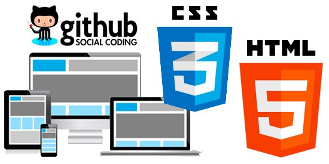

- 
HTMLQuick ha sido recientemente invadido por HTML5, el nuevo estándar para la web, que es rico en características y flexible. HTML5 va, día a día, ganando el soporte de los navegadores más importantes, convirtiéndose en el estándar más recomendado y la opción indiscutible para la producción de un sitio web.
| Principales novedades | ||
|---|---|---|
| Novedad | Etiqueta a usarse | Link de recurso |
| Esquinas redondeadas | border-radius | https://www.youtube.com/watch?v=zvuRRt5xCK4 |
| Imágenes en los bordes | border-image | https://www.youtube.com/watch?v=kK52pLqFDso |
| Gradientes lineales | linear-gradient | https://www.youtube.com/watch?v=4ghlSROVuH8 |
| Sombras de caja | box-shadow | https://www.youtube.com/watch?v=_NGlsvjQEOM |
| Transiciones | transition | https://www.youtube.com/watch?v=gV8CcBGCVSU |
Git es uno de los sistemas de control de versiones más populares, confiables y de alto rendimiento, y proporciona herramientas de desarrollo no lineal flexibles basadas en versiones y fusiones. Para garantizar la integridad del historial y la resistencia a los cambios en retrospectiva, se utiliza el hashing implícito de todo el historial anterior en cada confirmación y también se pueden verificar las firmas digitales de los desarrolladores de etiquetas individuales y confirmaciones.